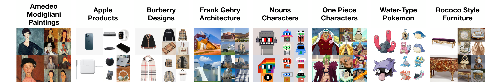

Application 1: Few-Shot Creative Generation
We collect dataset FSCG-8, fine-tune a Stable Diffusion checkpoint on each category of image-caption pairs, and compare the samples generated from DDIM, CADS, and ProCreate.
Our Dataset: Few-Shot Creative Generation 8
We curate a dataset that contains 8 categories with 50 image-caption pairs in each. Each category contains images that share properties like style, texture, and shape.

Results
We show the qualitative comparison between DDIM, CADS, and ProCreate for few-shot creative generation on FSCG-8 with standard fine-tuning. For each sampling method, we show two prompts and four generated samples for each prompt. We also match each ProCreate sample with its most similar training image.